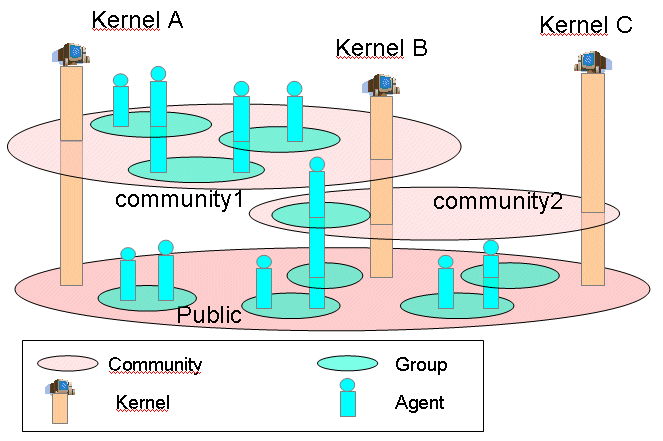

Using MadKit in a distributed environment
MadKit is a powerful system-independent distributed computing platform. Each
MadKit kernel may act as a node of a complex distributed environment. Connections
betweens kernels are done by a specific agent called the Communicator
which handles distributed communications between agents situated in different
kernels and synchronization of distributed groupes, i.e. groups that span across
multiple kernels.
When multiple kernels are connected, the resulting MadKit network forms a
distributed platform for building and running distributed applications using
agents as the main components. Agents may be used to connect users, share MadKit
applications, services, and documents of any kind.
It is important to be aware of the concept of Community,
when one is either designing a MadKit application or simply executing and
deploying such an application. A "community" is simply a group of connected
MadKit kernels. This concept is used to partition a whole MadKit network in
order to:
-
To speed it up,
-
To propose a conceptual repartition of resources and services,
-
To provide a framework for securizing distributed applications.
When designing an application in MadKit, you may create groups that belong to
specific communities {{see the createGroup function}}. A community, from a programmer's
point of view may be seen as a space for arranging several groups that are used
in the same application. For instance, the Chat application, which implements
a simple but realistic Chat in a
peer-to-peer,
is organized along a
chat community, in which groups represent the
topics of the Chat. When a Chat agent creates a "topic" with name
myTopic,
a
myTopic group is created within the
chat community. When
a kernel M wants to join the Chat application, it simply connects itself to
another kernel by specifying its hostname and port number, and its personal
Chat agent join the community Chat (See the {{link}} Chat application to get
an overwiew of its features and mode of operation).
The following figure shows a diagram which represents an example of communities

Figure 6. Communities with different kernels
with 3 communities (commnity1, community2 and public), 3 kernels (A, B and C)
and a set of groups and agents. A kernel is represented by a specific agent,
the
SiteAgent. This agent dialogs with the kernel to synchronize information
about groups, roles and agents that belong to communities. One can see the following
properties:
-
A group may appear in only one community.
-
A kernel (a SiteAgent) may belong to several communities.
-
The community public is global and all kernels belong to this
community.
-
An agent may belong to several communities. But a kernel sees only
an agent from the community to which this kernel belongs.
A MadKit network is both an open and securized network. It is an opened
network because any MadKit kernel may join such a network, by connecting to
a kernel which is part of it. But it is also a protected network, because
communities may be restricted to specific kernels, using the authorization
mechanism of groups.
Connecting a kernel to a MadKit network
Connection of a kernel to a MadKit network is done with the help of the NetAgent.
To make a connection, follow these steps:
-
Launch a Communicator agent, by clicking on the Agents>Communicator
for instance. This will open two windows: the window of the Communicator
itself, and a window corresponding to the SiteAgent which
lists all communities to which this kernel may belong. A green led indicates
that the Communicator is working.

-
In the texfields of the Communicator, type the name of the
host computer (and its port number, if it different from the default
port 4444) where another kernel is already running. This remote kernel
must have its Communicator already launched and active. If
everything is correct, you will see the name of the host computer inside
the list of connected hosts.
If the remote host is already connected to a set of hosts, you will
see the name of all hosts in the list of connected hosts of the SiteAgent
window.

-
If there are new communities, you may ask your kernel to belong to
them by clicking on the connected checkbox.

Once you have performed these steps, your kernel is connected directly to
all kernels and is now now part of a bigger network. It is said that the configuration
of the network is complete, because each
kernel is connected directly to all other kernels. There is no dedicated “server”
(and thus no “clients”). MadKit networks behave in a “peer-to-peer”
mode where all kernels are both server and client in the same time.
Note: A complete network is fast and reliable
but use a lot of resources for connection and it is not possible to build
large networks with this configuration schema. Thus, in the near future, a
new Communicator will be soon available. It which diminishes the
number of connection while preserving most of the speed and reliability of
the network. The configuration mode will still be “peer-to-peer”.
The GroupObserver
agent shows all groups and roles belonging to communities to which the
local kernel is connected. The community called Communities contain
the set of communities to which the local kernel belongs. Each community is
then seen as a group in the Communities community. The site
role shows all kernels (i.e. all SiteAgent) which belongs to a given
community.